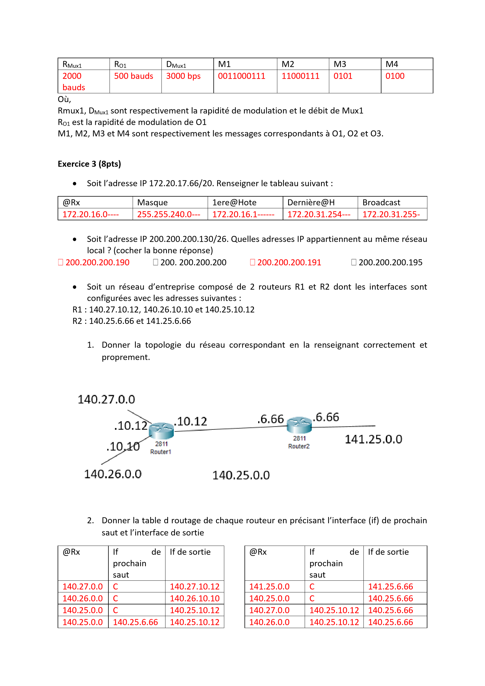
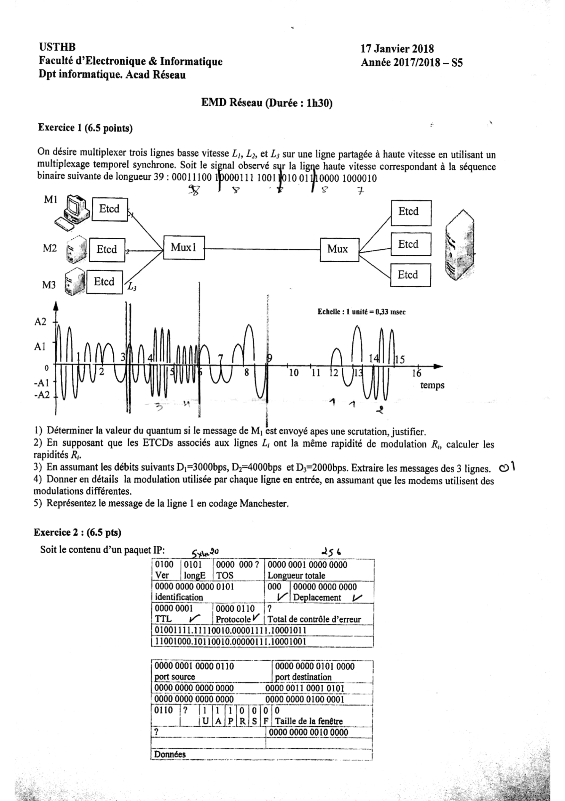
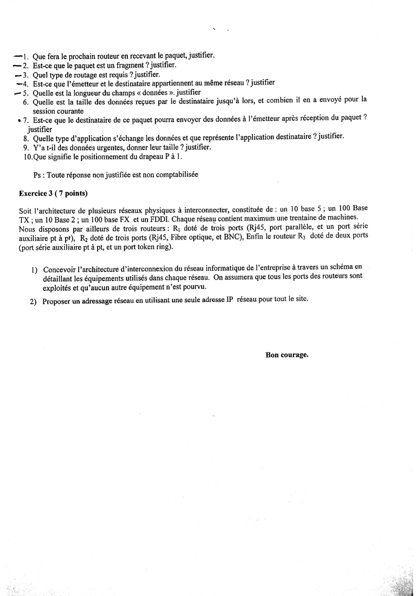
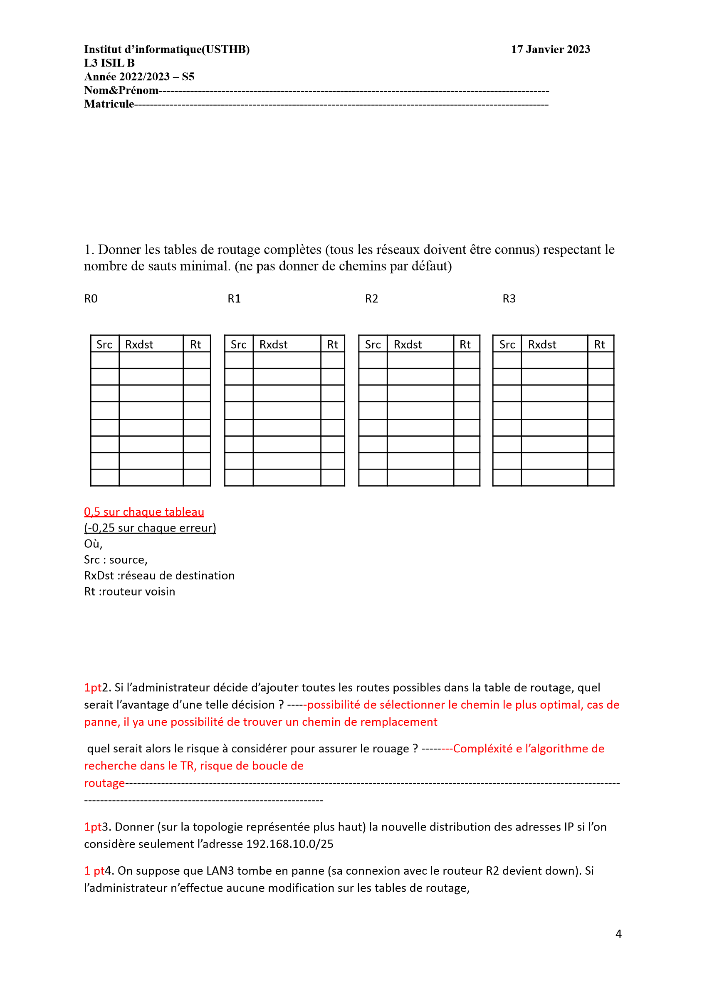
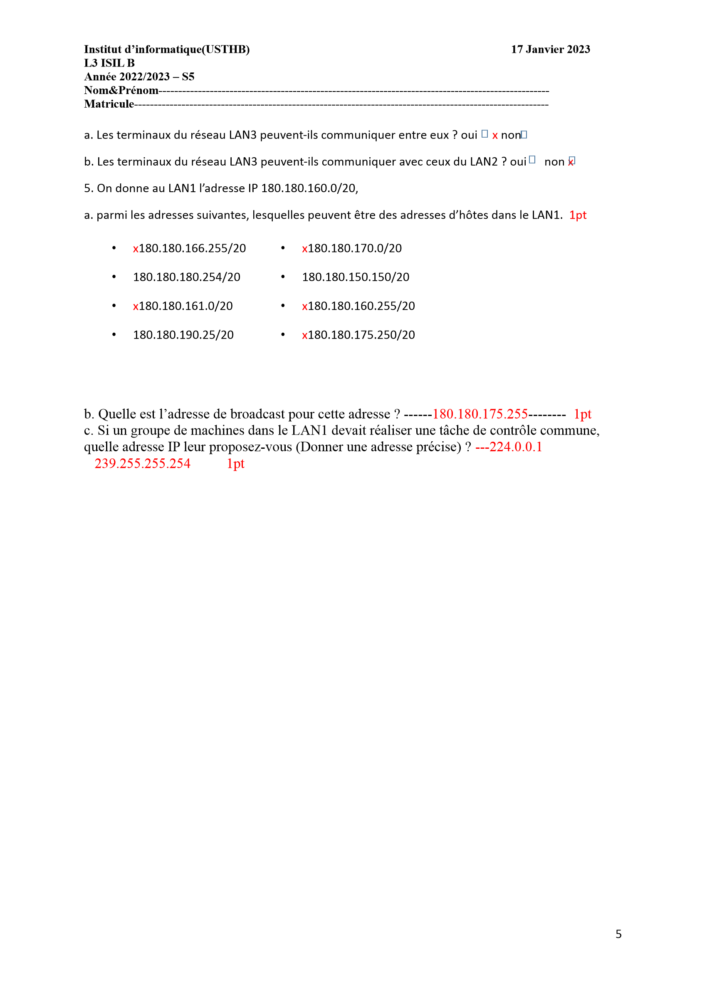

📖 Comment utiliser ce document
Lis dans l'ordre, mais repère surtout les couleurs. Chaque encadré a un rôle :
🧠 Stratégie d'examen : sur quoi parier
J'ai lu tous tes examens de 2017 à 2024 (sections ACAD et ISIL). La bonne nouvelle : l'examen est ultra-répétitif. Presque toujours les 3 mêmes gros thèmes. Si tu maîtrises ces trois-là, tu as déjà la moyenne large.
- Exercice « signal » = Multiplexage temporel + Modulation (souvent fusionnés en un seul exo).
- Exercice « erreurs » = Détection d'erreurs : soit CRC polynomial, soit parité VRC/LRC, soit distance de Hamming.
- Le GROS exercice (le plus de points) = Adressage IP + sous-réseaux + Tables de routage + Interconnexion (et très souvent Fragmentation IP).
- Bonus selon l'année : HDLC, lecture d'un datagramme IP / en-tête TCP, QCM de cours, calcul de débit (Nyquist/Shannon), temps de transfert (satellite).
Le tableau de fréquence (ce qui revient le plus)
« Fréquence » = dans combien d'examens sur les ~12 sujets analysés ce thème apparaît. Plus la barre est longue, plus c'est sûr que ça tombe.
| Thème | Fréquence | Priorité | Où l'apprendre |
|---|---|---|---|
| Adressage IP & sous-réseaux (masque, @réseau, broadcast, plan d'adressage) | 🔴 INDISPENSABLE | Chap. 9 | |
| Multiplexage temporel (Rmux, quantum, scrutations, extraire messages) | 🔴 INDISPENSABLE | Chap. 4 | |
| Modulation ASK/FSK/PSK (valence V, n=log₂V, lire un signal) | 🔴 INDISPENSABLE | Chap. 3 | |
| Tables de routage (destination → prochain saut / interface) | 🔴 INDISPENSABLE | Chap. 8 | |
| Fragmentation IP (MTU, ID, Offset, drapeau MF) | 🔴 TRÈS PROBABLE | Chap. 10 | |
| Interconnexion & équipements (routeur/pont/hub, normes Ethernet) | 🟠 PROBABLE | Ch.1 + Ch.7 | |
| CRC / code polynomial (G(x), C(n,k), circuit) | 🟠 PROBABLE | Chap. 5 | |
| VRC / LRC (double parité) | 🟠 PROBABLE | Chap. 5 | |
| Codage en ligne (Manchester, NRZ, RZ…) | 🟡 POSSIBLE | Chap. 3 | |
| HDLC (trames I/S/U, REJ/SREJ, diagramme d'échange) | 🟡 POSSIBLE | Chap. 6 | |
| Lecture datagramme IP + en-tête TCP | 🟡 POSSIBLE | Ch.10+Ch.11 | |
| QCM / définitions de cours (TCP vs UDP, OSI, CSMA/CD…) | 🟡 POSSIBLE | partout | |
| Débit Nyquist/Shannon, temps de transfert | 🟡 POSSIBLE | Chap. 2 | |
| Distance de Hamming | 🟢 BONUS | Chap. 5 |
- Le sous-réseautage (calcul de masque, @réseau, broadcast, nb d'hôtes, plan d'adressage). C'est le ROI de l'examen, le plus gros paquet de points.
- Multiplexage temporel + modulation : sache calculer Rmux, le quantum, et extraire les messages de chaque ligne.
- Fragmentation IP : la recette ID / Offset / MF.
- Tables de routage : remplir un tableau destination→sortie.
- CRC polynomial : la division pour trouver le reste A(x).
- Les maths de Fourier (séries/transformées) dans les slides de couche physique — jamais demandé en calcul.
- Détails des champs X.25 (bits Q, D, NVL, NGVL…) — culture, pas d'exo.
- Le code des algos (Send&Wait, backoff en C) — comprends le principe, pas le code ligne à ligne.
- Le détail des algorithmes de routage (link-state vs distance-vector interne, Dijkstra) — connais juste les noms et l'idée.
- Le codage BHDn, Miller, bipolaire entrelacé — rare ; concentre-toi sur Manchester/NRZ.
- 5 min : lis tout le sujet, repère le gros exo d'adressage IP (commence par lui si tu es à l'aise : le plus de points).
- Fais d'abord les exos que tu maîtrises (souvent : sous-réseaux, multiplexage).
- Justifie chaque réponse (formule + calcul).
- Pour le multiplexage/modulation : dessine proprement les signaux, l'examinateur adore.
- Garde 5 min pour vérifier les calculs de masques et d'offsets (sources d'erreurs bêtes).
1 C'est quoi un réseau ? (le vocabulaire de base)
Avant de calculer quoi que ce soit, il faut connaître les mots. L'examen adore les petites questions de cours et les QCM sur ce chapitre.
Pourquoi des réseaux ? Partager des infos, éviter de dupliquer les données, partager le matériel (imprimantes, disques), et communiquer/collaborer.
1.1 Classer les réseaux (4 critères)
| Critère | Les valeurs à connaître |
|---|---|
| Taille | LAN (local, 10 m → 1 km, le plus courant) · MAN (ville, 10 → 100 km) · WAN (pays/continent, 100 → 1000 km) |
| Type | Client-serveur (un serveur puissant sert des clients) · Poste à poste / Peer-to-Peer (tout le monde sur un pied d'égalité) |
| Topologie | Bus · Étoile · Anneau (voir Chap. 7) |
| Support | Filaire (câble) ou Sans fil (Bluetooth, Wi-Fi, satellite) |
1.2 Le modèle OSI (les 7 couches) 🎯 à connaître par cœur
| # | Couche | Son boulot (en une phrase) |
|---|---|---|
| 7 | Application | Les programmes de l'utilisateur (mail, web, FTP) |
| 6 | Présentation | Mise en forme/représentation des données (chiffrement, format) |
| 5 | Session | Gère l'ouverture/fermeture des sessions |
| 4 | Transport | Transfert de bout en bout, fiable et efficace (TCP/UDP) |
| 3 | Réseau | Adressage et routage des paquets à travers le réseau (IP) |
| 2 | Liaison | Transmission fiable de trames, contrôle d'erreurs et de flux |
| 1 | Physique | Transmettre les bits sur le câble (signaux) |
1.3 TCP/IP : le modèle « réel » d'Internet (4 couches)
OSI est la théorie. Internet utilise TCP/IP, plus simple, à 4 couches :
| Couche TCP/IP | Rôle | ≈ OSI |
|---|---|---|
| Application | telnet, FTP, SMTP, HTTP… | 5+6+7 |
| Transport | communication de bout en bout (TCP, UDP) | 4 |
| Internet | routage des paquets (IP, ARP, ICMP) | 3 |
| Accès réseau | carte réseau + driver (interface physique) | 1+2 |
1.4 Les équipements 🎯 super important pour l'exo d'interconnexion
La question clé de l'examen : « quel équipement utiliser ? » Réponse = ça dépend de la couche où il agit.
| Équipement | Couche | Ce qu'il fait |
|---|---|---|
| Répéteur | 1 (physique) | Amplifie/régénère un signal affaibli (allonge la distance) |
| Concentrateur / Hub | 1 (physique) | Répète le signal vers tous les ports (bête, pas de filtrage) |
| Pont / Bridge | 2 (liaison) | Relie 2 réseaux, filtre les trames, segmente les collisions |
| Commutateur / Switch | 2 (liaison) | Comme un pont multi-ports intelligent ; dirige vers le bon port |
| Routeur | 3 (réseau) | Relie des réseaux différents, choisit le meilleur chemin (table de routage), peut fragmenter |
| Passerelle / Gateway | les 7 couches | Traduit entre deux architectures protocolaires différentes |
1.5 Modes & commutation
Mode connecté
On établit d'abord une connexion (comme un appel téléphonique : « allô ? » avant de parler), puis on transfère, puis on raccroche. Plus fiable.Mode non connecté
On envoie les blocs sans prévenir (comme une carte postale). Plus simple, moins de garanties.Commutation de circuit
Un chemin dédié est réservé toute la durée (téléphone classique). Débit garanti mais gaspille la ligne dans les silences.Commutation de paquets
Les données sont coupées en paquets qui voyagent indépendamment, chacun pouvant prendre un chemin différent. Flexible et efficace (c'est Internet).2 Couche Physique : le signal et le câble
Ici on parle de la vraie transmission : transformer des 0/1 en signal électrique, lumineux ou radio. Pour l'examen on retient surtout : les formules de débit/temps et les caractéristiques des supports. Les maths de Fourier des slides ? on saute.
2.1 Le signal et ses 3 caractéristiques
Une onde se décrit par 3 choses : sa fréquence, son amplitude et sa phase. (Retiens-les : ce sont exactement les 3 choses qu'on fait varier pour moduler, voir Chap. 3.)
2.2 Les perturbations (ce qui abîme le signal)
- Bruit : perturbations qui modifient le signal. Deux types : bruit blanc/gaussien (thermique, faible, partout) et bruit impulsif (court, fort, ex. moteurs).
- Affaiblissement (atténuation) : le signal perd de l'énergie sur la ligne → la sortie est plus faible que l'entrée.
- Distorsion de phase : déphasage entre entrée et sortie (mauvaise synchro).
- Diaphonie : un câble « parasite » son voisin. Écho : réflexion du signal.
2.3 Caractéristiques d'une transmission 🎯 formules à connaître
2.4 Caractéristiques du canal : bande passante & capacité
- Bande passante W : la plage de fréquences que le canal laisse passer correctement (en Hz).
- Capacité C : le débit max possible (bits/s).
Bits par image = 800 × 600 × 16 = 7 680 000 bits.
Débit = 7 680 000 × 60 = 460 800 000 bits/s ≈ 460,8 Mbit/s.
2.5 Les supports physiques 🎯 tableau à remplir (2022 ACAD C)
| Support | Débit | Portée | Usage typique |
|---|---|---|---|
| Paire torsadée | 1 à 16 Mbit/s | 100 à 250 m (courte) | Téléphonie, réseaux locaux (le + utilisé) |
| Câble coaxial | 2 à 100 Mbit/s | ~3 à 4,5 km (longue) | Ethernet ancien, télévision (CATV) |
| Fibre optique | plusieurs Gbit/s | 15 à 500 km (très longue) | Hauts débits, dorsales ; immunisée aux parasites |
| Satellite | hautes fréquences | 36 000 km (géostationnaire) | Couverture mondiale ; problème = confidentialité |
2.6 Modes de transmission 🎯 vocabulaire QCM
Sens des échanges
- Simplex : un seul sens (ex. radio FM).
- Half-duplex : les deux sens mais pas en même temps (talkie-walkie).
- Full-duplex : les deux sens simultanément (téléphone).
Mode de transmission
- Série : les bits un par un sur un fil.
- Parallèle : N bits en même temps sur N fils (rapide mais coûteux).
Synchronisation
- Asynchrone : caractère par caractère, avec bits START/STOP (7 bits + parité → 10 bits). Simple, lent.
- Synchrone : flot continu de trames, horloge commune. Rapide, efficace, plus complexe.
À retenir
Une transmission se décrit par 4 choses : connecté/non · simplex/half/full · série/parallèle · synchrone/asynchrone.3 Codage en ligne & Modulation 🎯 TOMBE PRESQUE TOUJOURS
Comment envoyer des 0 et des 1 sur un câble ? Deux familles : transmission numérique (on code les bits en niveaux de tension = codage en ligne) et transmission analogique (on déforme une onde = modulation, il faut un modem).
3.1 Transmission numérique : le codage en ligne
On représente directement les 0/1 par des variations de tension. Les codages à connaître :
| Codage | Règle simple |
|---|---|
| NRZ (Non Return to Zero) | 1 = tension positive, 0 = tension négative. La tension ne revient pas à 0 entre les bits. |
| RZ (Return to Zero) | La tension revient à 0 au milieu de chaque bit. |
| Manchester (biphasé) 🎯 | Il y a toujours une transition au milieu du bit : front descendant = 1, front montant = 0. (Convention du cours USTHB.) Utilisé par Ethernet. |
| Manchester différentiel | Transition au milieu = toujours. Le bit dépend de la présence/absence de transition au début. Utilisé par Token Ring. |
| Bipolaire (AMI) | 0 = pas de courant ; 1 = courant alternativement + puis − (évite le courant continu). |
1011 en Manchester (descendant=1, montant=0)- 1 → haut puis bas (front descendant au milieu) : ▔▏▁
- 0 → bas puis haut (front montant au milieu) : ▁▏▔
- 1 → ▔▏▁ 1 → ▔▏▁
1011 = ⌐_ ⌐_ → vérifie qu'il y a bien une transition au milieu de chaque bit. (Type exo 2017.)3.2 Transmission analogique : la modulation (ASK / FSK / PSK)
| Technique | On fait varier… | Image |
|---|---|---|
| ASK (Amplitude Shift Keying) | l'amplitude (la hauteur) | Parler fort / doucement |
| FSK (Frequency Shift Keying) | la fréquence (la vitesse de l'onde) | Voix aiguë / grave |
| PSK (Phase Shift Keying) | la phase (le décalage) | Commencer l'onde en avance / en retard |
MOD2 : 2 amplitudes et 3 phases (0, π, π/2). → V₂ = 2 × 3 = 6… mais comme on code en binaire on prend la puissance de 2 supérieure utile : ici le corrigé donne V₂ = 8 (2 amplitudes × 2 phases × 2 fréquences, ou en arrondissant à 2³). n₂ = 3 bits/état.
Astuce : la valence finale est presque toujours une puissance de 2 (2, 4, 8, 16…) pour coder un nombre entier de bits.
Débit D = n × R = 4 × 1200 = 4800 bits/s. Chaque signal transporte 4 bits.
- Combien de hauteurs différentes vois-tu ? → c'est le nb d'amplitudes (ASK si >1).
- Combien de vitesses d'oscillation ? → nb de fréquences (FSK si >1).
- Le signal démarre-t-il parfois « à l'envers » ? → nb de phases (PSK si >1).
4 Multiplexage 🎯 L'EXERCICE LE PLUS FRÉQUENT
Le multiplexage = faire passer plusieurs communications sur une seule grosse ligne. C'est presque toujours le 1ᵉʳ exercice, fusionné avec la modulation. Apprends la méthode et tu gagnes ces points à chaque fois.
4.1 Les deux grandes familles
Multiplexage fréquentiel (AMRF / FDM)
On découpe la bande de fréquences en sous-bandes, une par utilisateur (comme les stations de radio). Transmissions en parallèle. Il faut des bandes de garde entre les canaux pour éviter qu'ils se chevauchent.Multiplexage temporel (AMRT / TDM)
Chaque voie a tour de rôle toute la bande passante pendant un petit instant appelé quantum (Q). Transmissions en série. C'est CELUI des exercices.- Synchrone : quantums égaux, donnés à chacun périodiquement (même si pas de données → on perd du temps).
- Asynchrone : quantum donné à la demande (seulement aux voies qui ont des données) → il faut ajouter l'adresse de la source.
4.2 Les formules du multiplexage temporel 🎯 à connaître
- Trouve la valence V du signal (nb d'amplitudes × phases × fréquences) → n = log₂V bits par état.
- Rmux = DHV / n (si on te donne le débit HV) ou Σ Ri.
- Δmux = 1 / Rmux (durée d'un état multiplexeur).
- Quantum Q : selon l'énoncé (« Q = un état » → Q = Δmux ; « un état et demi » → Q = 1,5·Δmux ; « stocke 4 états » → buffer = 4×n bits).
- Extraire les messages : découpe la séquence HV par paquets de n bits, et distribue à tour de rôle aux voies (PC1, PC2, PC3… dans l'ordre).
- Nb de scrutations = combien de tours complets pour tout envoyer.
1) Quantum ? Une scrutation se termine à 9 unités. Une scrutation = 3 quantums (3 lignes) = 9×0,33 = 3 ms → Q = 3/3 = 1 ms.
2) Rapidités ? Δmux = 0,33 ms → Rmux = 1/0,33ms = 3000 bauds. Comme R1=R2=R3 : Rmux = 3·Ri → Ri = 1000 bauds.
3) Extraire les messages avec D1=3000, D2=4000, D3=2000 bps → n1=D1/Ri=3, n2=4, n3=2 bits par état. On découpe la HV en respectant ces tailles à chaque tour :
MSG1 = 000111001 MSG2 = 0000 1111 0011 1000 0100 0010 MSG3 = 010011
4) Modulations : M1 a 2 amplitudes, 2 phases, 2 fréquences → V=8, n=3 → ASK+PSK+FSK. M2 : 2 ampl × 2 phases × 4 fréq → V=16, n=4. M3 : 2 ampl × 2 phases → V=4, n=2.
5) On dessine MSG1 en Manchester.
• Rmux = D/n = 9600/4 = 2400 bauds → Δmux = 1/2400 ≈ 0,42 ms.
• Quantum = « un état et demi » → Q = 0,42 + 0,21 = 0,63 ms. Buffer = 1,5 × 4 = 6 bits.
• 4 PC → Ri = Rmux/4 = 600 bauds → Δi = 1/600 ≈ 1,66 ms par état sur chaque ligne BV.
- Bien distinguer Rmux (sur la grosse ligne, rapide) et Ri (sur chaque petite ligne, lente). Rmux = n × Ri.
- Un silence dans le signal = une ligne n'a rien à envoyer ce tour-là (en synchrone, le quantum est quand même réservé).
- Distribue les bits aux PC dans l'ordre annoncé (PC1, PC2, PC3…) et recommence à chaque scrutation.
4.3 Concentration & Hub
La concentration = recevoir sur plusieurs lignes et tout remettre sur une seule (partage dans le temps). La diffusion = l'inverse. Un concentrateur (Hub) = un multiplexeur temporel asynchrone « intelligent » qui alloue les quantums à la demande.
5 Détection & correction d'erreurs 🎯 1 exo quasi garanti
Les câbles font des erreurs (un bit se retourne). On ajoute donc des bits de contrôle (redondance) pour détecter (et parfois corriger) ces erreurs. L'examen choisit UN parmi : VRC/LRC, Hamming, ou CRC polynomial.
Il y a 2ᵏ mots de code valides (sur 2ⁿ combinaisons possibles).
Efficacité (rendement) = k / n.
5.1 La parité simple (VRC) et croisée (LRC) 🎯
- VRC (Vertical Redundancy Check) = 1 bit de parité par caractère (par ligne). Détecte les erreurs en nombre impair, ne corrige pas.
- LRC (Longitudinal Redundancy Check) = 1 caractère de parité par colonne, ajouté à la fin du bloc.
| Car. | b1 b2 b3 b4 b5 b6 b7 | VRC |
|---|---|---|
| O | 1 0 0 1 1 1 1 | 1 (5 uns→impair, +1) |
| S | 1 0 1 0 0 1 1 | 0 (4 uns→pair) |
| I | 1 0 0 0 0 1 1 | 1 (3 uns→impair, +1) |
| LRC | 1 0 1 1 1 1 1 | 1 |
Correction : à l'arrivée, si la VRC de la ligne 2 est fausse et la LRC de la colonne 4 est fausse → le bit erroné est à (ligne 2, colonne 4), on l'inverse.
5.2 Distance de Hamming 🎯 petite question fréquente
Ex : 1101 ⊕ 1001 = 0100 → distance = 1.
La distance minimale d'un code (Dmin) = la plus petite distance entre deux mots valides du code. C'est elle qui décide du pouvoir de détection/correction :
5.3 Codes polynomiaux / CRC 🎯 exo technique récurrent
001101 (6 bits) → de gauche (poids fort) à droite : le bit de gauche est le coefficient de x⁵.= 0·x⁵ + 0·x⁴ + 1·x³ + 1·x² + 0·x + 1 = x³ + x² + 1.
- Multiplier Z(x) par xʳ (= décaler de r bits à gauche, = ajouter r zéros).
- Diviser Z(x)·xʳ par G(x) (en XOR, modulo 2 : pas de retenue) → on obtient un reste A(x) (degré ≤ r−1).
- Le mot à envoyer : Y(x) = Z(x)·xʳ + A(x) = message utile + A(x) collé à la fin.
1) Z(x)·x³ = x⁶+x⁵+x³ → en bits : 001101000 (on a ajouté 3 zéros).
2) Division par G(x)=x³+1 (1001) en XOR → reste A(x) = x² (= 100, écrit sur 3 bits).
3) Mot envoyé Y(x) = x⁶+x⁵+x³+x² → 001101 100 (les 3 derniers bits = la redondance).
⚠️ Écris toujours A(x) sur exactement r bits : si A(x)=x, ça s'écrit 010, pas 10.
- Détecte toute erreur simple si G(x) a au moins 2 termes non nuls (c'est pour ça que g₀ = gᵣ = 1).
- Détecte toute erreur en nombre impair si G(x) est divisible par (x+1).
- Détecte toutes les rafales d'erreurs de longueur ≤ r (degré de G).
6 Couche Liaison & le protocole HDLC
La couche 2 transforme les bits bruts en trames fiables. Elle détecte les erreurs, contrôle le flux, et délimite les trames. Le protocole star = HDLC (tombé en 2022 ACAD A et 2021 ISIL).
6.1 Rôle et sous-couches
La couche liaison se divise en deux sous-couches :
- LLC (Logical Link Control) : synchronisation des trames, contrôle de flux, vérification des erreurs.
- MAC (Media Access Control) : qui a le droit de parler sur un canal partagé (voir Chap. 7).
Ses 4 fonctions : détection d'erreurs · correction/reprise · contrôle de flux · découpage en trames (PDU).
6.2 Délimiter les trames (où commence/finit une trame ?)
| Méthode | Principe | Problème |
|---|---|---|
| Compter les caractères | Un champ dit combien de caractères | Si le compteur est faussé → désynchro totale |
| Caractères spéciaux (DLE/STX/ETX) | Marqueurs de début/fin | Les données peuvent contenir ces caractères |
| Fanions (flags) + bit stuffing 🎯 | Trame encadrée par 01111110 | Réglé par la transparence (voir ci-dessous) |
01111110 (un 0, six 1, un 0… en fait cinq 1). Pour éviter que les données ressemblent au fanion :
- À l'émission : après cinq 1 consécutifs dans les données, on insère un 0.
- À la réception : après cinq 1 consécutifs, on enlève le 0 qui suit.
011111100 → on insère un 0 après les cinq 1 : 011111010...6.3 Contrôle de flux & fenêtre d'anticipation
- Send and Wait : on envoie 1 trame, on attend l'ACK, puis la suivante. Simple mais lent.
- Fenêtre glissante (sliding window) : on envoie K trames d'affilée. K = taille de la fenêtre. Numérotation modulo N (cyclique : 0,1,…,N−1).
6.4 HDLC 🎯
HDLC (High-level Data Link Control) : protocole synchrone, orienté bit, mode connecté, en 3 phases (établissement → transfert → libération).
Structure de la trame :
| Fanion | Adresse | Contrôle | Données | FCS | Fanion |
|---|---|---|---|---|---|
| 01111110 | 8 bits | 8 bits | variable | 16 bits | 01111110 |
Le FCS (Frame Check Sequence) = 16 bits de CRC, généré par x¹⁶ + x¹² + x⁵ + 1.
| Type | Rôle |
|---|---|
| I (Information) | Transporte les données. Porte N(S) = n° d'émission, N(R) = n° attendu en réception. |
| S (Supervision) | Reprise sur erreur & contrôle de flux. Sous-types : RR (prêt à recevoir), RNR (occupé), REJ (rejet), SREJ (rejet sélectif). |
| U (Unnumbered, non numérotée) | Établir/libérer la liaison : SABM/SNRM (établir), UA (acquittement), DISC (déconnexion). |
- REJ (Reject) : « rejette tout à partir de N(R) » → demande de retransmettre toutes les trames depuis N(R) (reprise Go-Back-N).
- SREJ (Selective Reject) : « rejette seulement la trame N(R) » → retransmission de cette unique trame. Plus économe.
7 Sous-couche MAC : qui a le droit de parler ?
Quand plusieurs machines partagent un seul câble, il faut une règle pour éviter que tout le monde parle en même temps (= collision). C'est la méthode d'accès.
7.1 Les topologies physiques des LAN
Bus
- Ajout de station sans couper le réseau
- Pas de point critique central
- Collisions possibles
- Panne difficile à localiser
Étoile
- Maintenance centralisée
- Panne directe à détecter
- Ajout facile
- Le centre (hub/switch) est un point critique
Anneau
- Pas de collision
- Panne directe
- Chaque station est critique
- Ajout = coupure du réseau
À retenir
Le choix dépend du coût, de la fiabilité et de la facilité de maintenance. L'étoile (avec switch) est la plus courante aujourd'hui.7.2 Les méthodes d'accès 🎯 QCM fréquent
| Famille | Méthode | Principe |
|---|---|---|
| Statiques | AMRF (fréquence) | Chaque station a sa sous-bande de fréquence |
| AMRT (temps) | Chaque station a son créneau temporel (slot) | |
| Dynamiques probabilistes | ALOHA | On émet quand on veut ; si collision → on réémet. Taux d'utilisation ~18% |
| Slotted ALOHA | ALOHA mais on n'émet qu'au début d'un slot. ~36% | |
| CSMA | On écoute avant d'émettre | |
| CSMA/CD 🎯 | On écoute avant ET pendant ; si collision → on stoppe et on réémet plus tard. C'est Ethernet (802.3). | |
| Dynamique déterministe | Token Ring (802.5) | Un jeton circule ; seul celui qui l'a peut émettre. Pas de collision. |
- Écouter le câble. S'il est occupé → attendre.
- Libre → émettre, tout en continuant d'écouter.
- Collision détectée → envoyer un signal de bourrage (jam, 32 bits) pour prévenir tout le monde, puis attendre un temps aléatoire (algorithme de backoff) avant de réessayer.
- Après 16 collisions → abandon.
- Faible charge : Ethernet (802.3) est plus efficace.
- Forte charge : Ethernet souffre des collisions ; Token Ring reste stable.
- 802.3 = probabiliste (pas de délai garanti). 802.5 = déterministe (on connaît le délai max pour obtenir le jeton).
7.3 Ethernet : normes et trame 🎯 pour l'exo d'interconnexion
La notation Ethernet : D-Trans-L → D = débit (Mbit/s), Trans = Base (numérique) / Broad (analogique), L = support/longueur.
| Norme | Lecture |
|---|---|
| 10 Base 2 / 10 Base 5 | 10 Mbit/s, numérique, câble coaxial (bus), 2≈185m / 5≈500m |
| 10/100 Base T(X) | numérique, paire torsadée (étoile, hub/switch), segment 100 m |
| 100 Base FX | numérique, fibre optique (étoile), segment ~500 m |
| 1000 Base T/LX/SX | Giga Ethernet (1 Gbit/s) |
| FDDI | anneau en fibre optique (norme proche 802.5) |
4D:EE:52:A4:F6:69). Les 3 premiers octets = constructeur, les 3 derniers = n° de série. Broadcast = FF:FF:FF:FF:FF:FF.8 Couche Réseau & Routage 🎯 tables de routage = points sûrs
La couche 3 fait voyager les paquets de la source à la destination à travers plein de routeurs. Deux fonctions : adressage (chap. 9) et routage (choisir le chemin).
8.1 Routage : l'idée
- Mode datagramme (non connecté) : chaque paquet est routé indépendamment, peut prendre un chemin différent. (C'est IP.)
- Mode circuit virtuel (connecté) : on établit un chemin une fois, tous les paquets le suivent. Identifié par un n° de voie logique (NVL).
8.2 Les tables de routage 🎯 EXERCICE GARANTI
- Si le réseau est directement connecté au routeur → on note « C » (connecté / directe) + l'interface locale.
- Sinon → on note l'adresse du routeur voisin vers lequel envoyer (le prochain saut), choisi pour minimiser le nombre de sauts.
| Réseau dest. | Prochain saut | Interface de sortie |
|---|---|---|
| 140.27.0.0 | C (directe) | 140.27.10.12 |
| 140.26.0.0 | C (directe) | 140.26.10.10 |
| 140.25.0.0 | C (directe) | 140.25.10.12 |
| 141.25.0.0 | 140.25.6.66 (= R2) | 140.25.10.12 |
8.3 Algorithmes de routage (juste les noms)
| Type | Idée | Exemple |
|---|---|---|
| Distance vector | Chaque routeur échange ses meilleures distances avec ses voisins | RIP |
| Link state | Tous les routeurs connaissent toute la topologie, calcul du plus court chemin (Dijkstra) | OSPF |
9 Adressage IP & sous-réseaux 🎯★ LE ROI DE L'EXAMEN ★
Si tu ne dois maîtriser qu'une seule chose, c'est celle-là. C'est le plus gros exercice, présent à chaque examen. La bonne nouvelle : c'est très mécanique une fois la méthode comprise.
9.1 Une adresse IP, c'est quoi ?
192.168.1.10). Chaque nombre = 1 octet = 8 bits. Elle a 2 parties : la partie réseau (la rue) et la partie machine/hôte (le numéro de maison).9.2 Les classes d'adresses 🎯
| Classe | 1ᵉʳ octet | Masque par défaut | Partie réseau / hôte |
|---|---|---|---|
| A | 1 – 126 | 255.0.0.0 (/8) | réseau = 1 octet, hôte = 3 octets (énormes réseaux) |
| B | 128 – 191 | 255.255.0.0 (/16) | réseau = 2 octets, hôte = 2 octets |
| C | 192 – 223 | 255.255.255.0 (/24) | réseau = 3 octets, hôte = 1 octet (petits réseaux) |
| D | 224 – 239 | — | multicast (diffusion à un groupe) |
| E | 240 – 255 | — | expérimental |
- 127 = bouclage (loopback, tests locaux), pas une vraie classe A utilisable.
- Nb de réseaux classe A = 126 (1 à 126), souvent piégé en QCM avec « 128 » → la bonne réponse selon le corrigé 2022 ISIL est 128 (= 2⁷) si on compte les combinaisons du 1er bit, mais le nombre utilisable est 126. Lis bien l'énoncé !
- Adresses privées : A 10.x.x.x · B 172.16–31.x.x · C 192.168.x.x.
9.3 Adresses particulières
- Partie hôte = tous les bits à 0 → désigne le réseau lui-même (ex. 192.168.1.0). On ne l'attribue pas à une machine.
- Partie hôte = tous les bits à 1 → adresse de broadcast (diffusion à tout le réseau). On ne l'attribue pas non plus.
255.255.255.255= broadcast local.127.0.0.1= soi-même (localhost).
9.4 Le masque et le découpage en sous-réseaux 🎯 LE cœur
Ex : besoin de 5 sous-réseaux → 2² = 4 (trop peu), 2³ = 8 ≥ 5 → s = 3 bits.
On te demande X hôtes par réseau : prends h tel que 2^h − 2 ≥ X.
Ex : besoin de 200 hôtes → 2⁷−2 = 126 (trop peu), 2⁸−2 = 254 ≥ 200 → h = 8 bits.
9.5 La méthode pas-à-pas pour TOUT trouver
- Masque : n bits à 1. Convertis en décimal pointé.
- Trouve l'octet « intéressant » (celui où le masque n'est ni 255 ni 0). Le pas (bloc) = 256 − (valeur du masque dans cet octet).
- @réseau = le multiple du pas juste en-dessous de l'IP, dans cet octet (les octets suivants → 0).
- broadcast = @réseau + pas − 1 (dans l'octet intéressant ; octets suivants → 255).
- 1ᵉʳ hôte = @réseau + 1. dernier hôte = broadcast − 1.
L'octet intéressant = le 3ᵉ (240). Pas = 256 − 240 = 16.
Dans le 3ᵉ octet, l'IP vaut 17. Le multiple de 16 juste en-dessous de 17 = 16.
→ @réseau = 172.20.16.0
→ broadcast = 172.20.31.255 (16+16−1 = 31 dans le 3ᵉ octet, 255 dans le 4ᵉ)
→ 1ᵉʳ hôte = 172.20.16.1 dernier hôte = 172.20.31.254
Donc les hôtes valides vont de 180.180.160.1 à 180.180.175.254. Une adresse comme 180.180.166.255 est un hôte valide (elle est dans la plage et n'est pas le broadcast 175.255), mais 180.180.180.254 est hors du réseau (180 > 175).
130 tombe dans le bloc 128 → 191. Donc @réseau = .128, broadcast = .191.
→ 200.200.200.191 est dans le même réseau (c'est même son broadcast). .190 aussi. Mais .195 est dans le bloc suivant (192–255) → pas le même réseau.
9.6 Concevoir un plan d'adressage (le gros exo) 🎯
- Compte les réseaux à adresser : chaque LAN + chaque liaison point-à-point entre routeurs (on les oublie souvent !).
- Bits de sous-réseau : s tel que 2^s ≥ nb de réseaux.
- Vérifie que ça rentre : reste-t-il assez de bits hôte pour la plus grosse demande (2^h−2 ≥ max machines) ?
- Attribue les plages : sous-réseau 0, puis +pas, +pas… Donne à chaque LAN sa plage.
- Adresses des interfaces routeurs : souvent la 1ᵉʳ adresse de chaque plage (passerelle).
Classe C : 8 bits hôte − 3 = 5 bits hôte → 2⁵−2 = 30 machines max par réseau (l'énoncé dit ~30 ✓).
Adresse : 193.168.1.0, masque /27 = 255.255.255.224 (pas = 32). Plages :
| Réseau | Plage |
|---|---|
| 10 Base 5 | 193.168.1.32 → .63 |
| 100 Base TX | 193.168.1.64 → .95 |
| 10 Base 2 | 193.168.1.96 → .127 |
| 100 Base FX | 193.168.1.128 → .159 |
| FDDI | 193.168.1.160 → .191 |
| Liaison R1–R3 | 193.168.1.192 → .223 |
- Oublier de compter les liaisons entre routeurs comme des réseaux à part entière.
- Confondre @réseau (hôte = 0) et 1ᵉʳ hôte (réseau + 1).
- Oublier le −2 dans le nombre d'hôtes utilisables.
224.0.0.1. (Réponse type 2022 ISIL.)10 Le datagramme IP & la fragmentation 🎯 fragmentation = très fréquent
IP est le protocole qui met les paquets en forme et gère leur découpage. Deux choses tombent : lire les champs d'un datagramme et fragmenter un datagramme.
10.1 IP en 3 rôles
IP : ① définit le format du datagramme, ② gère le routage, ③ remise non fiable (pas de garantie d'arrivée — pas de séquencement, pas de contrôle de flux, pas de retransmission. C'est TCP qui s'en charge au-dessus).
10.2 Les champs du datagramme IP 🎯 lecture d'en-tête (2017, 2023)
| Champ | Taille | À quoi ça sert |
|---|---|---|
| Version | 4 bits | IPv4 (=4) ou IPv6 (=6) |
| IHL (longueur en-tête) | 4 bits | En mots de 32 bits. Valeur typique 5 → en-tête = 5×4 = 20 octets |
| TOS (type of service) | 8 bits | Priorité (0–7) + bits D/T/R/C (délai, débit, fiabilité, coût) |
| Longueur totale | 16 bits | Taille du datagramme entier (en-tête + données) en octets |
| Identification | 16 bits | N° unique du datagramme. Recopié dans tous ses fragments. |
| Drapeaux | 3 bits | DF (Don't Fragment) · MF (More Fragments : 1 = il en reste, 0 = dernier) |
| Déplacement (Offset) | 13 bits | Position du fragment dans le datagramme d'origine, en multiples de 8 octets |
| TTL (durée de vie) | 8 bits | Nb max de routeurs. −1 à chaque routeur. À 0 → paquet détruit |
| Protocole | 8 bits | 1=ICMP, 2=IGMP, 6=TCP, 17=UDP |
| Checksum en-tête | 16 bits | Contrôle d'intégrité de l'en-tête |
| @ source / @ destination | 32 bits ch. | Les adresses IP |
- « Que fait le prochain routeur ? » → si TTL = 1, il le décrémente à 0 et détruit le paquet.
- « Est-ce un fragment ? » → non si MF = 0 ET Offset = 0.
- « Même réseau émetteur/destinataire ? » → compare les parties réseau des deux IP.
- « Longueur des données ? » → Longueur totale − en-tête IP − en-tête TCP.
- « Quel type d'application ? » → regarde le port destination (80 = web, etc.).
10.3 La fragmentation 🎯 RECETTE à connaître par cœur
MTU = 500 → données max par fragment = (500−20) = 480, déjà multiple de 8 → 480 octets/fragment.
1980 / 480 = 4 fragments pleins (4×480 = 1920) + 1 fragment de 60 octets. 5 fragments :
| Frag | Données | ID | Offset | MF |
|---|---|---|---|---|
| F1 | 480 | 1 | 0 | 1 |
| F2 | 480 | 1 | 480/8 = 60 | 1 |
| F3 | 480 | 1 | 960/8 = 120 | 1 |
| F4 | 480 | 1 | 1440/8 = 180 | 1 |
| F5 | 60 | 1 | 1920/8 = 240 | 0 |
R1 (MTU 1500) : données max = 1480 (multiple de 8). → F1 : 1480 oct, offset 0, MF=1 ; F2 : 1000 oct, offset 1480/8 = 185, MF=0.
R2 (MTU 1100) : ne re-fragmente que F1 (1480 > 1080). données max = 1080. → F1.1 : 1080 oct, offset 0, MF=1 ; F1.2 : 400 oct, offset 1080/8 = 135, MF=1. (F2 passe tel quel.)
- L'Offset est en multiples de 8 octets : divise toujours par 8 le nombre d'octets précédents.
- Les données par fragment doivent être multiples de 8 → si (MTU−20) n'est pas multiple de 8, arrondis vers le bas.
- N'oublie pas de retirer les 20 octets d'en-tête de la longueur totale pour avoir les données.
- Le dernier fragment a MF = 0, tous les autres MF = 1.
11 ARP, ICMP, TCP, UDP
Les protocoles autour d'IP. Surtout demandé : TCP vs UDP, l'en-tête TCP (drapeaux), et le rôle d'ARP/ICMP.
11.1 ARP, RARP, ICMP
| Protocole | Rôle (en une phrase) |
|---|---|
| ARP (Address Resolution) | Trouver l'adresse MAC correspondant à une adresse IP (IP → MAC). Envoie une requête à tout le LAN, la bonne machine répond. |
| RARP (Reverse ARP) | L'inverse : trouver son IP à partir de sa MAC (utile pour une machine sans disque qui démarre). |
| ICMP | Messages d'erreur et de contrôle (ex. ping). Voyage dans des datagrammes IP. Un message d'erreur ICMP contient l'en-tête IP + les 8 premiers octets du datagramme fautif. |
11.2 TCP vs UDP 🎯 question quasi systématique
| TCP | UDP | |
|---|---|---|
| Connexion | Mode connecté (établit une connexion) | Sans connexion |
| Fiabilité | Fiable : ACK, retransmission, ordre garanti | Non fiable : pas d'ACK, pas d'ordre |
| Contrôle de flux | Oui (fenêtre/crédit) | Non |
| Vitesse / surcharge | Plus lourd | Léger et rapide |
| Usage | Gros transferts fiables (web, mail, fichiers) | Petits envois rapides (DNS, voix, temps réel) |
11.3 L'en-tête TCP & les ports 🎯 (analyse 2017)
TCP identifie les applications par des ports (16 bits). Le triplet (@IP, protocole, n° de port) identifie un processus sur le réseau.
| Port | Service |
|---|---|
| 21 | FTP (transfert de fichiers) |
| 23 | Telnet (connexion à distance) |
| 25 | SMTP (mail) |
| 53 | DNS (noms de domaine) |
| 80 | HTTP (web) |
- URG : données urgentes (le pointeur urgent est valide).
- ACK : le champ accusé de réception est valide.
- PSH (Push) : remettre les données tout de suite à l'application sans attendre que le buffer soit plein.
- RST : réinitialiser/détruire la connexion. SYN : ouverture. FIN : fermeture.
- TTL va passer à 0 → le routeur détruit le paquet.
- MF = 0 et Offset = 0 → pas un fragment.
- Longueur données = Long. totale − en-tête IP − en-tête TCP = 256 − 20 − 24 = 212 octets.
- Port destination = 80 → application Web, le destinataire est un serveur web.
- Fenêtre de l'émetteur = 0 → le destinataire ne pourra pas lui renvoyer de données.
- Drapeau P (PSH) = 1 → données remises à l'application sans attendre.
📝 Annales — spécial Chapitre 9 (Adressage IP)
3 exercices d'examens réels qui, ensemble, couvrent TOUT le Chapitre 9 : décoder une IP (masque, @réseau, hôtes, broadcast), concevoir un plan d'adressage complet, et remplir les tables de routage. La question est l'image du sujet original (non réécrite) ; dessous, ma solution expliquée pas-à-pas. Clique une image pour l'agrandir, ou ouvre le PDF d'origine.
- 2020 ISIL → t'entraîne à décoder une IP (/20, /26) + petites tables de routage. C'est la mécanique pure.
- 2017 ACAD → le plan d'adressage complet à partir d'une seule adresse classe C + interconnexion + tables de routage. L'exercice « roi ».
- 2022 ISIL → les vérifications : adresses d'hôtes valides, broadcast, multicast, et raisonnement sur une panne. Ce qui complète le reste.
① 2020-2021 — ISIL B — Exercice 3
📄 La question (sujet original, corrigé en rouge) :

📎 Ouvrir le PDF original✅ Solution expliquée pas-à-pas
Q1 — Tableau pour 172.20.17.66 /20
- Masque /20 : 20 bits à 1 = 8 + 8 + 4 → le 3ᵉ octet =
11110000= 240. Donc masque = 255.255.240.0. - Octet coupé = le 3ᵉ (celui à 240). Bloc = 256 − 240 = 16.
- 3ᵉ octet de l'IP = 17 → arrondi au multiple de 16 inférieur = 16.
- @réseau = 172.20.16.0
- 1ʳᵉ @hôte = 172.20.16.1 (= @réseau + 1)
- Broadcast = 172.20.31.255 (16 + 16 − 1 = 31 dans le 3ᵉ octet, puis 255)
- Dernière @hôte = 172.20.31.254 (= broadcast − 1)
Q2 — 200.200.200.130 /26 : quelles IP sont dans le même réseau ?
- /26 = 255.255.255.192. Bloc = 256 − 192 = 64. Les réseaux : .0–.63, .64–.127, .128–.191, .192–.255.
- 130 tombe dans le bloc .128 → .191 (@réseau .128, broadcast .191).
- Donc dans le même réseau : 200.200.200.190 et 200.200.200.191 (✓ entre 128 et 191). Pas .195 ni .200 (ils sont dans le bloc .192–.255). → réponse cochée : 200.200.200.191.
Q3 — Tables de routage de R1 et R2
R1 a 3 interfaces (réseaux 140.27.0.0, 140.26.0.0, 140.25.0.0) ; R2 en a 2 (140.25.0.0 partagé avec R1, et 141.25.0.0). « C » = réseau directement connecté.
| @Rx dest | Prochain saut | Sortie |
|---|---|---|
| 140.27.0.0 | C | 140.27.10.12 |
| 140.26.0.0 | C | 140.26.10.10 |
| 140.25.0.0 | C | 140.25.10.12 |
| 141.25.0.0 | 140.25.6.66 | 140.25.10.12 |
| @Rx dest | Prochain saut | Sortie |
|---|---|---|
| 141.25.0.0 | C | 141.25.6.66 |
| 140.25.0.0 | C | 140.25.6.66 |
| 140.27.0.0 | 140.25.10.12 | 140.25.6.66 |
| 140.26.0.0 | 140.25.10.12 | 140.25.6.66 |
Logique : chaque routeur atteint directement (C) les réseaux branchés sur ses interfaces ; pour les réseaux « de l'autre côté », il envoie au routeur voisin via le réseau partagé 140.25.0.0.
② 2017-2018 — ACAD — Exercice 3
📄 La question (sujet original) — l'énoncé est en bas de la page 1 :


📎 Sujet PDF 📎 Corrigé officiel PDF✅ Solution expliquée pas-à-pas
Énoncé : 5 réseaux physiques (10Base5, 100BaseTX, 10Base2, 100BaseFX, FDDI), ~30 machines chacun, reliés par 3 routeurs ; on veut une seule adresse réseau pour tout le site.
Étape 1 — Compter les réseaux à adresser
5 LANs + 1 liaison point-à-point R1–R3 (la liaison série entre 2 routeurs = un réseau à part entière, à ne pas oublier !) = 6 réseaux.
Étape 2 — Bits de sous-réseau
Il faut 2^s ≥ 6 → 2³ = 8 ≥ 6 → s = 3 bits empruntés.
Étape 3 — Vérifier la taille
Une classe C a 8 bits hôte. On en emprunte 3 → reste 5 bits hôte → 2⁵ − 2 = 30 machines par réseau (≈30 demandé ✓). Une seule classe C suffit donc.
Étape 4 — Masque & plages
Adresse : 193.168.1.0, masque /27 = 255.255.255.224 (bloc = 256 − 224 = 32). On découpe en blocs de 32 :
| Réseau | Plage | @ interface routeur (1ʳᵉ utile) |
|---|---|---|
| 10 Base 5 | 193.168.1.32 → .63 | R1 : .33 |
| 100 Base TX | 193.168.1.64 → .95 | R1 : .65 / R2 : .66 |
| 10 Base 2 | 193.168.1.96 → .127 | R2 : .97 |
| 100 Base FX | 193.168.1.128 → .159 | R2 : .129 |
| FDDI | 193.168.1.160 → .191 | R3 : .161 |
| Liaison R1–R3 | 193.168.1.192 → .223 | R1 : .193 / R3 : .194 |
À noter : le corrigé commence au sous-réseau .32 (le tout premier bloc .0–.31 est laissé de côté, prudence classique). Les passerelles prennent la 1ʳᵉ adresse de chaque plage.
Étape 5 — Tables de routage
Principe identique à l'exercice 1 : chaque routeur connaît en direct les réseaux branchés sur ses ports, et atteint les autres via le routeur voisin sur le chemin. Extrait (destination → interface de sortie) :
| Destination | via R1 | via R2 | via R3 |
|---|---|---|---|
| 10 Base 5 (.32) | .33 (C) | .65 | .193 |
| 100 Base TX (.64) | .65 (C) | .66 (C) | .193 |
| 10 Base 2 (.96) | .66 | .97 (C) | .193 |
| 100 Base FX (.128) | .66 | .129 (C) | .193 |
| FDDI (.160) | .194 | .65 | .161 (C) |
③ 2022-2023 — ISIL B — Exercice 4 (Q4 & Q5)
📄 La question (sujet original, corrigé en rouge) :


📎 Ouvrir le corrigé PDF✅ Solution expliquée pas-à-pas
Q5 — LAN1 = 180.180.160.0 /20
- /20 = 255.255.240.0 → bloc = 16 (3ᵉ octet). 160 est déjà un multiple de 16 → @réseau = 180.180.160.0.
- Broadcast = 180.180.175.255 (160 + 16 − 1 = 175, puis 255). → réponse Q5.b.
- Plage des hôtes valides : 180.180.160.1 → 180.180.175.254.
Q5.a — Hôtes valides = dans la plage et différents du broadcast :
| Adresse | Valide ? | Pourquoi |
|---|---|---|
| 180.180.166.255 | ✅ oui | dans [160 ; 175], et ≠ broadcast |
| 180.180.170.0 | ✅ oui | dans la plage |
| 180.180.161.0 | ✅ oui | dans la plage |
| 180.180.160.255 | ✅ oui | dans la plage |
| 180.180.175.250 | ✅ oui | dans la plage (juste avant le broadcast) |
| 180.180.180.254 | ❌ non | 180 > 175 → autre réseau |
| 180.180.150.150 | ❌ non | 150 < 160 → autre réseau |
| 180.180.190.25 | ❌ non | 190 > 175 → autre réseau |
Q5.c — Tâche de contrôle commune → groupe de machines = adresse multicast (classe D), ex. 224.0.0.1.
Q4 — Panne de LAN3 (lien vers le routeur down), tables inchangées
- a) Communiquer entre eux ? → non : la connexion du LAN au routeur est tombée (le LAN est isolé).
- b) Communiquer avec LAN2 ? → non : il n'existe plus de chemin (le lien est coupé et personne n'a mis à jour les tables).
Q1–Q3 (rappel méthode)
Q1 : remplir les tables de routage des 4 routeurs (R0–R3) au plus court (pas de route par défaut). Q3 : avec 192.168.10.0/25 → /25 = 255.255.255.128 → 2 sous-réseaux (.0–.127 et .128–.255), 2⁷ − 2 = 126 machines chacun. Même méthode que l'exercice 2017.
🍳 Recettes d'exercices (anti-panique)
Les « modes d'emploi » des exercices qui tombent. Quand tu vois le type d'exo, applique la recette les yeux fermés.
Recette 1 — Multiplexage temporel + Modulation
- Lire le signal → compter amplitudes × phases × fréquences = V. Puis n = log₂V.
- Rmux = Débit_HV / n ou Σ Rᵢ. Si voies identiques : Rmux = nb_voies × Rᵢ.
- Δmux = 1/Rmux. Quantum Q selon l'énoncé (1 état → Q=Δmux ; 1,5 état → 1,5·Δmux).
- Taille buffer = (nb d'états par quantum) × n bits.
- Découper la séquence HV par paquets de n bits, distribuer à PC1, PC2… dans l'ordre, recommencer à chaque scrutation.
- Dessiner les signaux demandés (Manchester, etc.) proprement.
Recette 2 — Sous-réseaux : trouver @réseau / broadcast / hôtes
- Écris le masque /n en décimal. Repère l'octet « intéressant » (ni 255 ni 0).
- Pas = 256 − (valeur du masque dans cet octet).
- @réseau = plus grand multiple du pas ≤ valeur de l'IP dans cet octet (octets suivants = 0).
- broadcast = @réseau + pas − 1 (octets suivants = 255).
- 1ᵉʳ hôte = @réseau + 1 ; dernier hôte = broadcast − 1.
- Nb hôtes = 2^(bits hôte) − 2.
Recette 3 — Plan d'adressage d'une entreprise
- Compte les réseaux : tous les LANs + chaque liaison routeur-routeur.
- Bits sous-réseau : s tel que 2^s ≥ nb de réseaux.
- Vérifie : bits hôte restants donnent assez de machines (2^h − 2 ≥ max).
- Distribue les plages (0, +pas, +2·pas…) à chaque réseau.
- Interfaces routeurs = 1ᵉʳ adresse utile de chaque plage (passerelle).
- Donne le masque final et le tableau {réseau, masque, plage valide, broadcast}.
Recette 4 — Fragmentation IP
- Données du datagramme = Longueur totale − 20 (en-tête IP).
- Données max/fragment = ⌊(MTU − 20)/8⌋ × 8.
- Découpe : autant de fragments pleins que possible + 1 reste.
- Pour chaque fragment : même ID ; Offset = (octets avant)/8 ; MF = 1 sauf le dernier (0).
- Si plusieurs MTU le long du chemin, re-fragmente à chaque routeur qui réduit le MTU.
Recette 5 — CRC (code polynomial)
- Convertis le message Z et le générateur G en polynômes/bits. r = degré de G.
- Ajoute r zéros à droite de Z (= Z·xʳ).
- Divise par G en XOR (modulo 2, sans retenue) → reste A(x).
- Mot émis = message + A(x) (A sur exactement r bits !).
- Réception : diviser le reçu par G ; reste 0 → OK, sinon erreur.
Recette 6 — VRC/LRC (détecter ET corriger)
- Range les caractères en lignes (matrice).
- VRC : ajoute un bit par ligne pour la parité (paire en général).
- LRC : ajoute une ligne de parité par colonne.
- Réception : repère la ligne à parité fausse et la colonne à parité fausse.
- Le bit erroné est à leur intersection → inverse-le pour corriger.
Recette 7 — Tables de routage
- Liste tous les réseaux du schéma (LANs + liaisons).
- Pour chaque routeur, pour chaque réseau : connecté ? → C + interface locale.
- Sinon → adresse du voisin sur le chemin le plus court (moins de sauts).
- Remplis le tableau {destination, prochain saut, interface de sortie}.
📜 Annales décortiquées (2017 → 2024)
Exactement ce qui a été demandé chaque année. Regarde comme c'est répétitif : le même trio revient encadré en couleur.
| Année / Section | Exercices posés |
|---|---|
| 2017-2018 ACAD | ① Multiplexage temporel + modulation + Manchester · ② Lecture datagramme IP + en-tête TCP (10 sous-questions) · ③ Interconnexion + plan d'adressage (classe C /27) + tables de routage |
| 2019-2020 ACAD | ① Multiplexage synchrone (audio, V=256) : débit, Rmod, quantum, scrutations · ② Interconnexion 4 LANs + adressage 130.10.0.0 /23 + tables de routage · ③ Fragmentation IP (2500 oct, MTU 1500/1100) |
| 2020-2021 ACAD B&C | ① Multiplexage temporel (V=16) + lecture signal · ② Interconnexion + adressage 155.50.0.0 + routage + fragmentation (MTU 500) + VRC/LRC (mot OSI) |
| 2020-2021 ISIL | ① QCM (routage, bandes de garde, CSMA/CD, encapsulation, OSI) · ② Multiplexage + modulation (V=4 et V=2) · ③ Sous-réseaux (172.20.17.66/20, 200.200.200.130/26) + tables de routage |
| 2021-2022 ACAD B&C | ① Modulation (4 phases, 2 ampl.) + multiplexage · ② Interconnexion + adressage 215.50.3.0/24 + routage + fragmentation (2309 oct) · ③ Codage en ligne (identifier + redessiner en V=8) |
| 2021-2022 ISIL | ① Cours : code image, NRZ + FSK, matrice H (BCH), RARP/translation/commutation/SCTP, couches · ② Routage fixe (débit puis distance) sur graphe · ③ Topologie étoile, méthodes d'accès, polling |
| 2022-2023 ACAD A | ① Cours : TCP vs UDP, REJ/SREJ · ② HDLC : principe + diagramme d'échange (mode NRM) · ③ Plan d'adressage (3 @réseau, serveur web public) + bonus débit image |
| 2022-2023 ACAD B | ① Multiplexage temporel + modulation · ② CRC code polynomial C(8,2) : G(x), circuit, coder 1011, matrices · ③ Topologie depuis « show ip route » + adressage + routage + fragmentation |
| 2022-2023 ISIL | ① QCM (trames, paquet réseau, classe A, CSMA/CD, duplex) · ② Hamming + matrice VRC/LRC · ③ Modulation + multiplexage + débit + multiplexage fréquentiel · ④ Sous-réseaux (192.168.10.0/25, 180.180.160.0/20) + tables de routage |
| 2023-2024 ACAD A | ① Cours : couches OSI + rôles, perturbations, transmission analog/num, datagramme IP · ② CRC : circuit, G(x), coder 1101 · ③ Modulation (2 phases 2 fréq) + valence + temps émission/transfert (satellite) |
| 2023-2024 ACAD B&C | ① Multiplexage temporel (HV 8400 bps) + signal · ② CRC : G(x)=x³+x²+x+1, position 0–15, circuit · ③ Interconnexion 4 LANs + adressage 140.10.240.0/20 + routage + fragmentation (2 datagrammes, MTU 900) |
🃏 Révision express (la veille de l'examen)
Les réponses qu'on te demande le plus souvent. Cache la réponse, teste-toi.
Distances LAN / MAN / WAN ?
Ordre des 7 couches OSI (1→7) ?
Quel équipement à quelle couche ?
Relier 2 réseaux à méthodes d'accès différentes ?
V, n, R, D ?
Valence si 2 amplitudes, 2 phases, 4 fréquences ?
Bandes de garde pour n canaux (multiplexage fréquentiel) ?
Manchester : 1 et 0 ?
Dmin = 2d+1 permet quoi ?
CRC : que fait-on du message avant division ?
Classes IP par 1ᵉʳ octet ?
Masques par défaut A/B/C ?
Nb d'hôtes utilisables avec h bits ?
172.20.17.66/20 → @réseau et broadcast ?
Fragmentation : données max/fragment et offset ?
Numéros de protocole IP ?
Ports célèbres ?
TCP vs UDP en un mot ?
Trame HDLC : fanion et FCS ?
REJ vs SREJ ?
Que fait CSMA/CD après une collision ?
Adresse MAC : taille ?
Rôle de ARP ?
✅ Checklist finale avant l'examen
Coche mentalement. Si tu sais faire tout ça, tu es prêt(e).
- Trouver @réseau, masque, 1ᵉʳ/dernier hôte, broadcast d'une IP /n
- Concevoir un plan d'adressage (sous-réseaux + liaisons + interfaces)
- Remplir une table de routage
- Calculer V, n, Rmux, quantum et extraire les messages d'un multiplexage
- Identifier les modulations (ASK/FSK/PSK) et la valence depuis un signal
- Fragmenter un datagramme (ID, Offset, MF) avec un MTU donné
- Faire une division CRC en XOR / une matrice VRC-LRC
- Rôles des 7 couches OSI + équipement par couche
- TCP vs UDP, drapeaux TCP, ports célèbres
- Trame HDLC, types I/S/U, REJ/SREJ
- CSMA/CD vs Token Ring (probabiliste vs déterministe)
- Normes Ethernet (10Base2/5, 100BaseTX/FX, FDDI)
- Codage Manchester ; classes IP ; adresses particulières
- Nyquist / Shannon ; temps transmission + propagation
- Justifie tout (formule + calcul). Réponse non justifiée = 0.
- Compte les liaisons routeur-routeur comme des réseaux dans le plan d'adressage.
- Vérifie tes masques et offsets à la fin : ce sont les fautes bêtes les plus fréquentes.
Tu connais maintenant le module et la stratégie. Révise les 5 thèmes chauds, fais 2-3 annales en conditions réelles, et c'est dans la poche. 🍀